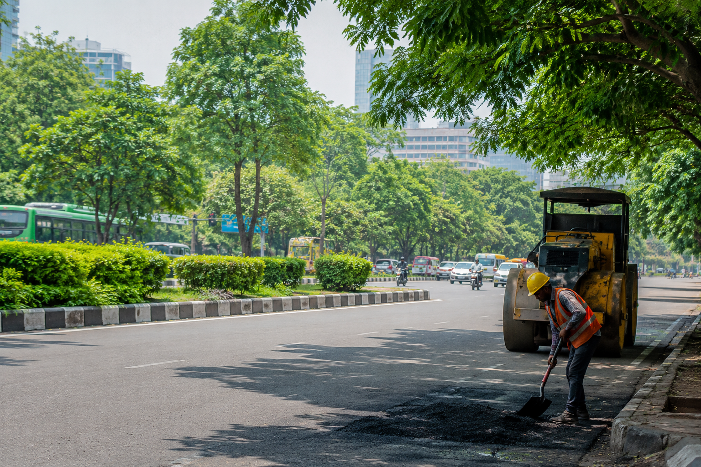

GovConnect makes it easy for citizens to report potholes, garbage, broken streetlights, water leaks and other civic issues directly to the concerned authorities.
Report civic problems in just a few simple steps and help authorities create cleaner, safer and better cities.
Take a photo of the civic problem and provide a short description.
GPS automatically identifies the location of the reported issue.
AI can classify the issue and determine its priority and severity.
Citizens can track the status of their complaints from submission to resolution.
Once you report an issue, you can track its progress and know when authorities take action.